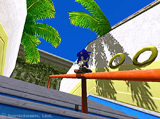
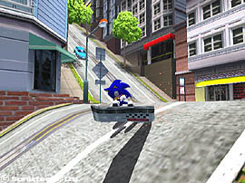

| 毎日更新！「ソニックアドベンチャー２」最新画像 | |
| 第三日目 | |
| [アクション] | |
|
ソニックの新アクション「グラインド」！
公園の手すりや電車の線路など、細長いレール状になっているものの上を滑り降りるテクニックだ。 この他にも多彩な新アクションが加わり、爽快感もスピード感も大幅にＵＰ！ |
|
|  |  |
| これが新アクション「グラインド」だ！ | ボードを使って坂道を滑走！ |
| 明日の更新もお楽しみに！ | |
| ←これまでの情報 | |
| (c) Sonicteam, Ltd. 2000 | |
| このページは、ソニックチームＵＳＡがサンフランシスコよりお送りしています。 | |